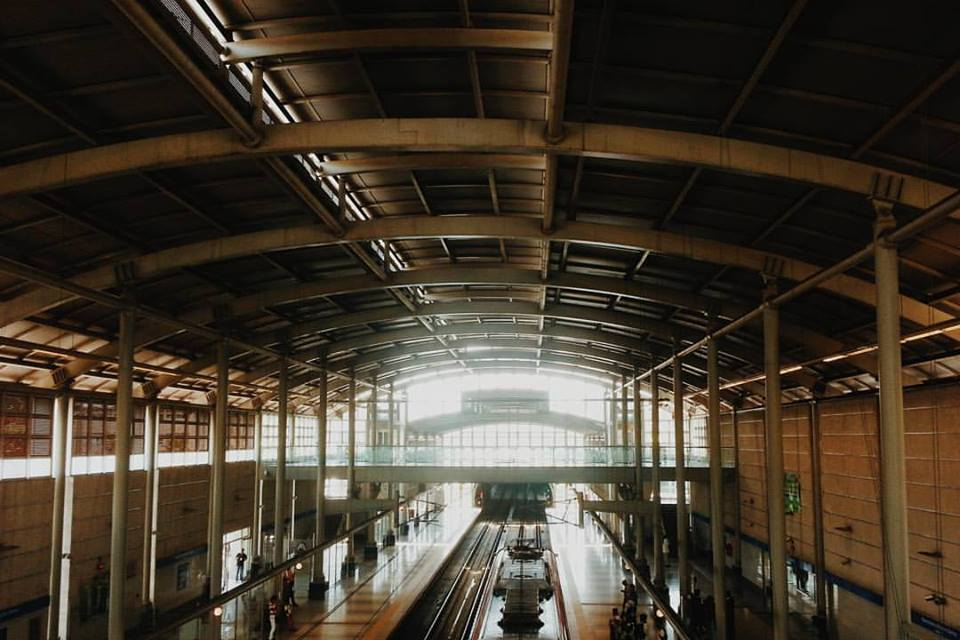
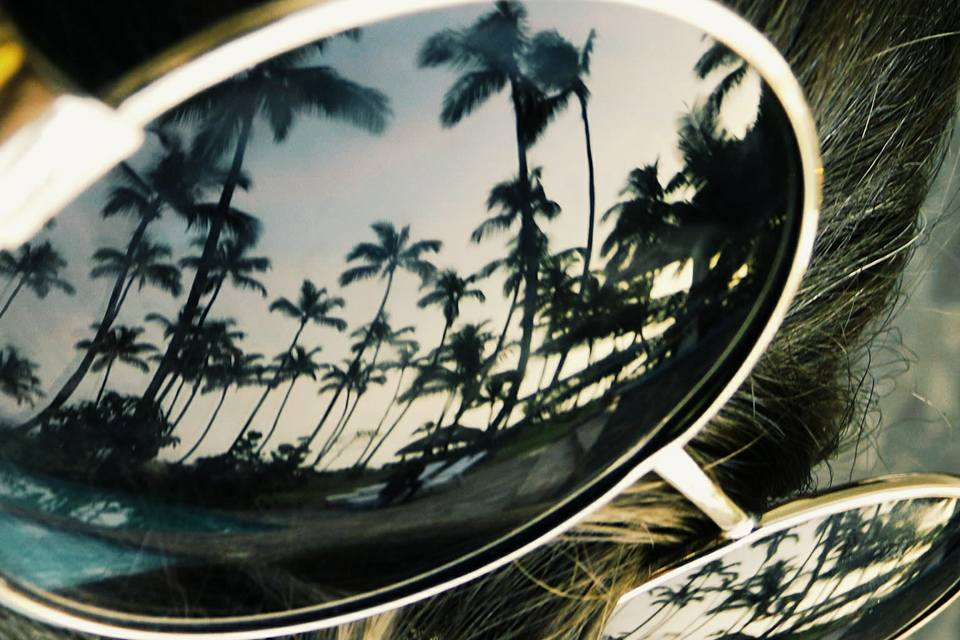
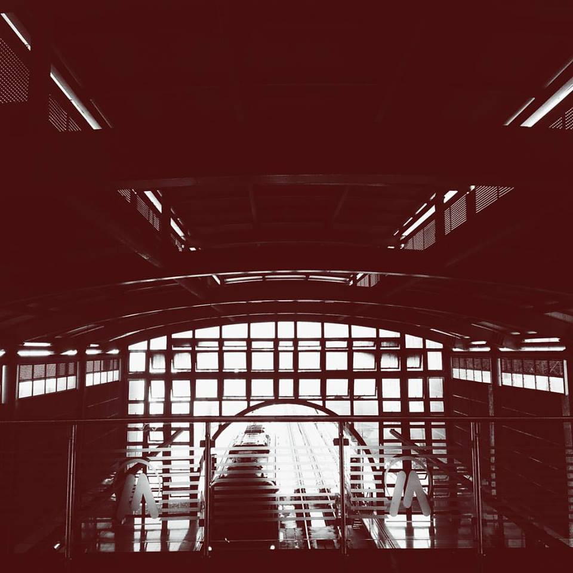
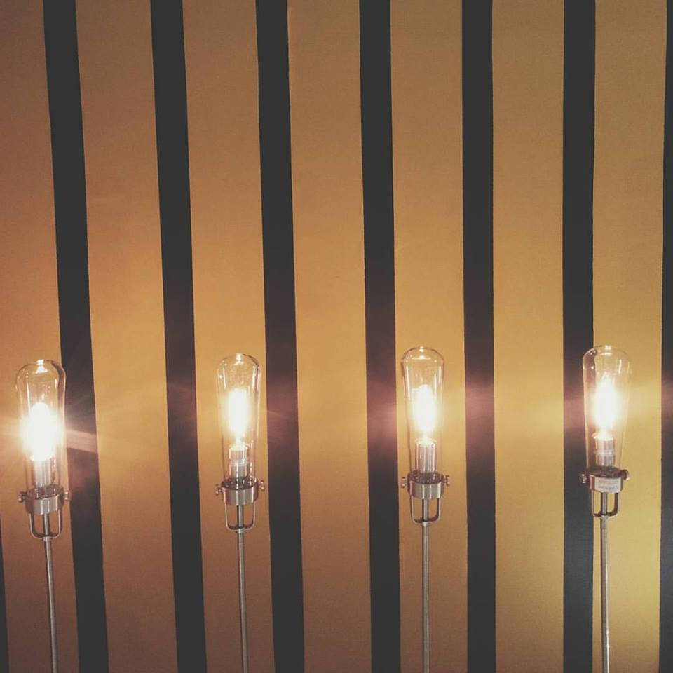

Fotografía Instantánea
Con mis fotos trato de capturar cosas de la cotidianidad que pueden pasar desapercibidas, pero que en realidad son una bellaza, además, documento el mundo y mi vida como quiero, y esa es una de las muchas maneras en la que me comunico visualmente con la gente que me sigue y que me rodea. Mis fotos son una representación fiel de lo que yo interpreto del mundo, y las comparto en mis redes sociales para que todos sean parte de esa experiencia a través de mi.
   